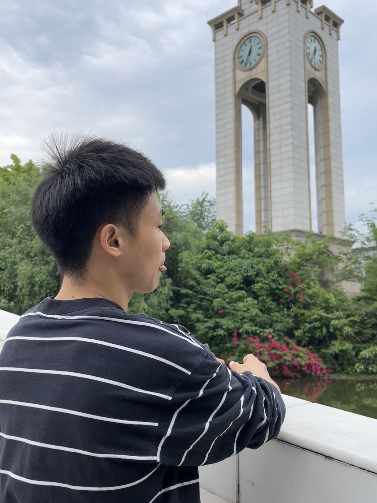
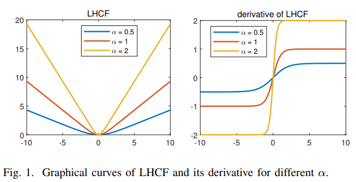

|
Lei Cao 曹磊
I am a first-year master student at School of Computing and Artificial Intelligence, Financial Intelligence and Financial Engineering Key Laboratory of Sichuan Province (FIFE), Southwestern
University of Finance and Economics(SWUFE), supervised by Prof. Long Shi. Before that, I was a undergraduate student at Southwest Petroleum University (SWPU).
My research interests are mainly in multi-view clustering, multimodal learning and applications in finance.
Email /
Google Scholar /
Github /
CV
|

|
|
News
(2023/05) 1 paper with Prof. Long Shi and Prof. Badong Chen is accepted by IEEE SPL!
|
|

|
Robust Subspace Clustering by Logarithmic Hyperbolic Cosine Function
Lei Cao,
Long Shi,
Jun Wang,
Zhendong Yang,
Badong Chen
IEEE Signal Processing Letters (SPL), 01 May 2023
[Paper]
[Code]
|
Honors
Outstanding University Graduates of Sichuan Province, 2022
Outstanding Undergraduate Graduation Design, Southwest Petroleum University, 2022
First Prize of the Academic Festival for Postgraduates, Southwestern University of Finance and Economics, 2022
|
|